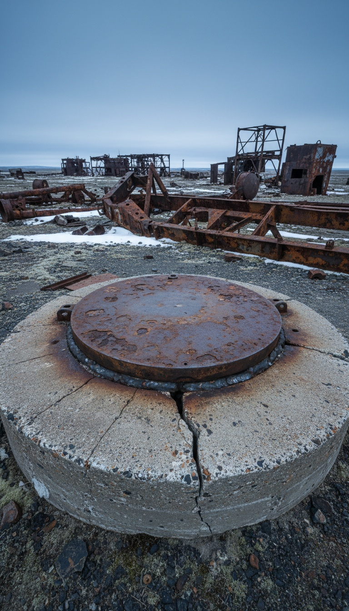

There is a hole in Russia that goes deeper than any human being has ever gone, and it is welded shut.
The Soviet Union spent twenty two years drilling it. From May 24, 1970 until 1992, on the Kola Peninsula above the Arctic Circle, borehole SG-3 chewed 12,262 meters straight down into some of the oldest granite on the planet. Then the drilling stopped, the project died, and a rusted steel cap was welded over the wellhead. The official reason was funding. The final logs from the deepest instruments have never been published in full. Both of those facts are true at the same time, and only one of them gets repeated.

The Race to the Underworld
On May 24, 1970, Soviet engineers broke ground near the town of Zapolyarny in Murmansk Oblast, ten kilometers from the Norwegian border. The project was run by the Interministerial Scientific Council for the Study of the Earth's Interior and Superdeep Drilling, a body created specifically for this one hole. The target was 15,000 meters, deep enough to touch the boundary where crust becomes mantle.
The Americans had already tried and quit. Project Mohole, drilled off Guadalupe Island, Mexico, was killed by Congress in 1966 after burning through roughly 57 million dollars for 183 meters of seafloor sediment. The United States never went back.
The Soviets did not quit. By 1979 SG-3 passed the Bertha Rogers gas well in Oklahoma, then the deepest hole in the world at 9,583 meters. By 1989 it reached 12,262 meters. Thirty seven years later, no one on Earth has drilled deeper. The record was not broken. It was abandoned.
The Layer That Was Not There
Every seismic survey of the continental crust showed the same thing: at around seven kilometers down, granite gives way to basalt. Geologists call the transition the Conrad discontinuity, and it appears on reflection charts all over the world. The Kola drill reached seven kilometers, then eight, then nine. The basalt never came.
What the drill found instead was fractured granite, soaked through with water, continuing all the way to the bottom of the hole. The boundary that appears on every chart does not physically exist at the one place on Earth where humans went down and checked.
Sit with what that means. The layered model of the deep crust, the one taught in every textbook, is built on remote readings. The single direct test we have ever run contradicted it at seven kilometers. Everything below 12,262 meters is still inference, and the inference already failed once.
Water Where Water Cannot Exist
Nine miles down, the rock was wet. Free flowing water moved through crushed granite at depths where the standard model said no surface water could ever penetrate, because kilometers of impermeable rock stand in the way.
The explanation the project geologists settled on is stranger than the anomaly. The water did not come down from the surface. It was squeezed out of the mineral crystals themselves, hydrogen and oxygen atoms forced together by pressure, then trapped in place by the sealed rock above. The deep crust, in other words, manufactures its own water and hides it.
Then there was the mud. Crews reported drilling mud returning to the surface charged with so much hydrogen gas that it appeared to boil. That is their word, from the project's own accounts. Boiling. From a hole in solid granite, above the Arctic Circle.
Nine miles down, inside granite the textbooks called dry and solid, the rock was bleeding water and boiling with hydrogen.
Life, Two Billion Years Down
At around 6.7 kilometers the core samples came up carrying passengers. Researchers identified twenty four distinct species of fossilized single celled marine plankton, sealed inside rock roughly two billion years old.
These were not ordinary fossils. Normal marine microfossils are preserved in shells of limestone or silica. The Kola specimens were wrapped in films of carbon and nitrogen compounds, and they came through billions of years of crushing pressure and rising heat intact.
Twenty four species. Six point seven kilometers. Two billion years. Every number in that sentence comes from the Soviet core logs, and every number pushes the envelope of where life can exist deeper than biology had drawn it.
The Heat That Ended Everything
The engineers had calculated the temperature at twelve kilometers before they started: about 100 degrees Celsius. The thermometers at the bottom of SG-3 read 180. The planet was running eighty degrees hotter than the model, at the exact depth where the model had never been tested.
The rock itself stopped behaving like rock. At the bottom of the hole the granite deformed like plastic, flowing into the borehole and closing it whenever the drill string was withdrawn. Crews would pull the bit and find the hole sealing itself behind them.
Projections put the temperature at the 15,000 meter target near 300 degrees. In 1992 the drilling stopped. David Guberman, who directed the Kola Geological Research Institute and ran the site, summed up two decades of work in one line: every time we drill a hole we find the unexpected, and Kola was full of surprises.
The Legend Built to Bury the Question
In 1989 a story exploded across American airwaves, pushed hardest by Trinity Broadcasting Network. Soviet scientists had lowered a microphone into the world's deepest hole and recorded human screams from a cavity fourteen miles down. The Well to Hell. The story was engineered to be absurd, and the absurdity did its job perfectly. From that year forward, anyone who asked what the Kola instruments actually recorded sounded like a person who believed in recorded screams. The real question got buried under the cartoon version of it.
But Guberman, the man who ran the drill, gave interviewers a detail the cartoon never needed. Asked about the legend, he described a strange noise registered at depth, followed by an explosion, and said that when crews returned to the same depth days later they found nothing there. That account comes from the project director, on the record, not from a televangelist.
The site was shut down in stages. Drilling ended in 1992. The scientific program closed in 1995. By 2008 the facility was stripped and abandoned, and today the deepest hole ever made sits in a field of Soviet ruins outside Zapolyarny, covered by a corroded steel cap that somebody took the time to weld into place before walking away.
Count the superdeep programs. America's Mohole died in committee in 1966. Germany's KTB borehole in Bavaria stopped at 9,101 meters in 1994 after temperatures ran ahead of every forecast the planners had. Kola stopped at 12,262 meters when its country dissolved out from under it. Three attempts to reach the deep crust, three sudden stops short of target, and Kola is the only one where the final instrument logs simply never surfaced.
The cap on SG-3 is 23 centimeters across. It covers the deepest doorway our species ever opened, and after two decades of drilling we had reached 0.2 percent of the distance to the center of the Earth. Two tenths of one percent, and what we found in that sliver was water that should not exist, life that should not survive, heat no model predicted and rock that flows like plastic. Then they welded it. You do not weld a door you plan to open again. What do you think came up that hole before they sealed it? Put your theory in the comments.
Before you go
7 books the Vatican doesn't want you reading. Free PDF — the texts they cut, with sources. Joined by 140+ Inner Circle members.
No spam. Unsubscribe anytime.
Go deeper
The Hidden Canon, Vol. I — Enoch. Jubilees. Thomas. Mary. Judas. 90 pages, 14 chapters, every receipt cited. The books your Bible quietly removed.
Read the Canon →Books that informed this investigation
As an Amazon Associate, Hidden Epoch earns from qualifying purchases. Cost to you: nothing.
Research safely
The VPN we use to research without being tracked. First 3 months free.
Get NordVPN →